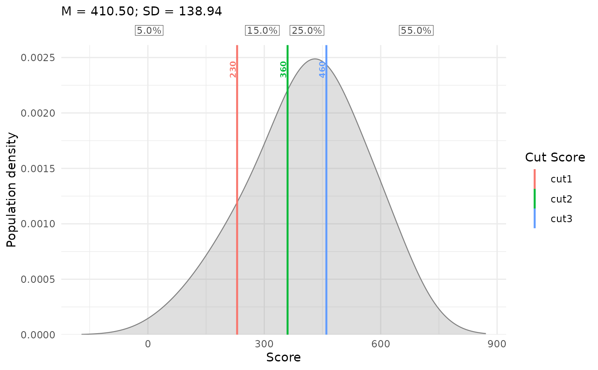
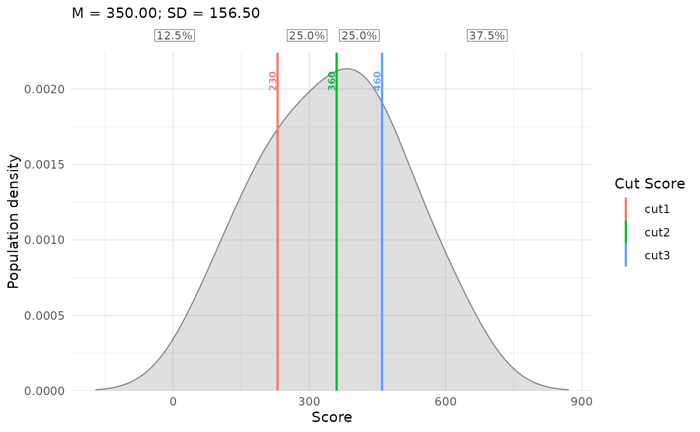

Plot Population Distributions with Supplied Cut Scores
plotPopulationCuts.RdPlots a population density estimated from plausible values (PVs), with supplied
numeric cut scores and percentage shares for the resulting intervals. No IDM
result object is needed. Supports the same PV layouts, weights, population
groups, and display options as plotPopulationCutsIDM.
Usage
plotPopulationCuts(
cuts, pv_data, pv_cols = NULL,
respondent_id_col = NULL,
pv_id_col = NULL, pv_value_col = NULL,
weight_col = NULL,
input_format = c("auto", "long", "wide"),
pv_missing = c("error", "drop"),
density_bw = NULL, density_adjust = 1,
cut_labels = NULL, est_col = NULL,
show_cut_values = TRUE,
cut_value_digits = 0L, cut_value_size = 2.6,
population_fill = "grey50", population_alpha = 0.25,
population_col = NULL, population_colors = NULL,
show_percentages = TRUE, percentage_digits = 1L,
percentage_size = 3,
show_population_stats = TRUE, population_stats_digits = 2L,
show_caption = FALSE
)Arguments
- cuts
Non-empty, finite numeric vector of strictly increasing cut scores, on the same scale as the PVs. Missing, duplicate, or unsorted cuts are rejected. Vector names are ignored; use
cut_labelsto label the cut lines.- pv_data
Data frame of plausible values for one domain, optionally containing multiple populations. No scale conversion is performed.
- pv_cols
Explicit character vector of PV columns for wide input, with one row per respondent. Required for wide input.
- respondent_id_col
Optional respondent ID column for wide input; required for long input. IDs must be unique within each population in wide input.
- pv_id_col
PV identifier column for long input. Each respondent-PV combination must be unique within its population.
- pv_value_col
Numeric PV value column for long input.
- weight_col
Optional numeric sampling-weight column. Weights must be finite, non-missing, non-negative, and constant across each respondent's PVs. Zero-weight observations are excluded. Default
NULLuses equal weights.- input_format
"auto"selects long input whenpv_id_colorpv_value_colis supplied, and wide input otherwise.- pv_missing
"error"rejects missing PV values or respondent-PV rows."drop"omits them with a warning and renormalizes weights within each PV and population. Each PV requires at least two observed respondents with positive weights. Infinite PVs and invalid weights always cause an error.- density_bw
Optional positive finite bandwidth in score units. The default averages unweighted
stats::bw.nrd0()bandwidths across PVs within populations, then across populations. SeeplotPopulationCutsIDM.- density_adjust
Positive finite multiplier for the common bandwidth.
- cut_labels
Optional character vector with one unique, non-empty label per cut, in cut order. Defaults to
"cut1","cut2", etc. These label cut lines in the legend, not intervals.- est_col
Optional x-axis metric label. Default
NULLlabels the axis"Score"; otherwise the label is"Score (<est_col>)".- show_cut_values
Show numeric labels next to cut lines.
- cut_value_digits
Non-negative integer number of decimal places in cut labels. Trailing zeros are removed. This does not change interval membership.
- cut_value_size
Non-negative cut-label text size in millimetres.
- population_fill
Density fill and outline color, or one color per population in order of first appearance. If omitted, grouped input uses an automatic palette. An incorrect color count warns and restores defaults.
- population_alpha
Fill opacity between zero and one.
- population_col
Optional grouping column. Population identifiers must be non-missing and non-empty. Densities and percentages are estimated separately within each population, in order of first appearance.
- population_colors
Optional named color vector with exactly one color for each population. Requires
population_col; takes precedence overpopulation_fill.- show_percentages
Show interval percentages above the density panel. Hiding labels does not suppress the returned percentage table.
- percentage_digits
Integer from zero to ten specifying decimal places in displayed percentages. Rounding may make displayed totals differ from 100.
- percentage_size
Non-negative percentage text size in millimetres.
- show_population_stats
Show population mean and SD in the population legend, or subtitle for ungrouped input.
- population_stats_digits
Integer from zero to ten specifying decimal places in displayed mean and SD.
- show_caption
Show explanatory captions. Defaults to
FALSE.
Details
Gaussian kernel densities are estimated separately for each PV using normalized sampling weights, then averaged equally across PVs. Populations share a common bandwidth and grid, and each density has area one. PVs are never averaged within respondents before estimation.
Percentages are computed directly from observed PVs, independently of density smoothing. For each population and PV, the weights in each interval are divided by that PV's total available weight and multiplied by 100. These percentages are then averaged equally across PVs. With cuts \(c_1, \ldots, c_K\), intervals are \((-\infty, c_1)\), \([c_1, c_2)\), through \([c_K, \infty)\). Equality belongs to the upper interval. All available values contribute, including values outside the visible plot range. Missing-value dropping renormalizes weights within each PV and population.
Population means average the per-PV weighted means. SD is the square root of
the average per-PV variance, with the \(n/(n-1)\) correction applied within
each PV and population. See plotPopulationCutsIDM for details of
estimation, missing-data handling, colors, and percentage-label placement.
Value
A ggplot object that can be printed, customized, or saved with
ggplot2::ggsave(). Its "population_percentages" attribute is a
data frame with columns population, interval (starting at one),
lower, upper, and percentage (unrounded, from zero to 100).
Outer bounds are infinite. Ungrouped input uses the population label
"Population". The table is calculated even if show_percentages = FALSE.
Extract it with attr(p, "population_percentages") before further plot
customization. These are descriptive shares, without standard errors.
Examples
pvs <- data.frame(
PV1 = c(100, 230, 360, 460),
PV2 = c(230, 360, 460, 600),
weight = c(1, 2, 3, 4)
)
p <- plotPopulationCuts(
cuts = c(230, 360, 460), pv_data = pvs,
pv_cols = c("PV1", "PV2"), weight_col = "weight"
)
p

attr(p, "population_percentages")
#> population interval lower upper percentage
#> 1 Population 1 -Inf 230 5
#> 2 Population 2 230 360 15
#> 3 Population 3 360 460 25
#> 4 Population 4 460 Inf 55
long_pvs <- data.frame(
id = rep(1:4, times = 2), pv = rep(c("PV1", "PV2"), each = 4),
score = c(pvs$PV1, pvs$PV2)
)
plotPopulationCuts(
c(230, 360, 460), long_pvs,
respondent_id_col = "id", pv_id_col = "pv", pv_value_col = "score"
)
